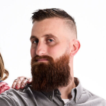
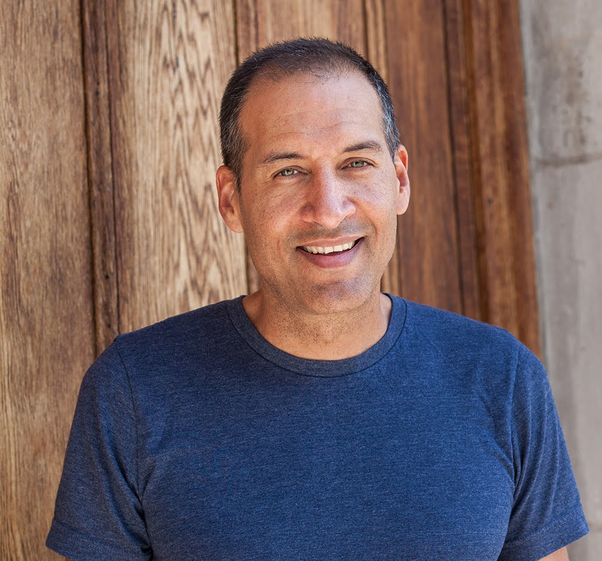

We spent years building the boring infrastructure.
RootSource is a commercial product built on top of the data infrastructure originally developed for the Cooperative Extension System — a public research network that answers agricultural questions for free, with citations, at land-grant universities across the country. We took the part of that system private-sector teams kept asking for and packaged it as an API.
How we got here
RootSource is built and operated by the Extension Foundation, a 501(c)(3) nonprofit that has spent years building shared infrastructure, professional development, and applied AI research for the Cooperative Extension System. The Foundation's work exists so that no single institution has to solve the same data or technology problem alone.
That work already includes ExtensionBot, a citation-grounded conversational AI used directly by the public, and MERLIN, the data infrastructure that aggregates and validates research content from land-grant institutions nationwide to keep it current.
The aggregation network
A crawling and validation pipeline built by the Extension Foundation to keep a public Extension chatbot grounded in current, source-cited research from institutions nationwide.
The retrieval layer matures
State-aware weighting, honest no-match handling, and a citation format specific enough that a grower could click through and check it themselves.
Private-sector demand
Ag-tech teams asked for API access to the same grounded answers, for use in products the public network was never built to serve directly.
RootSource, spun out
A dedicated product and brand, built to fund the Foundation's public mission rather than compete with it.
A commercial product, in service of a nonprofit mission.
The Extension Foundation doesn't operate RootSource to build a separate bottom line. Revenue from RootSource is directed back into the Foundation's core work — the same programs that built the data network RootSource runs on, and the same ones that keep Extension's public tools free for the institutions and communities they were built for.
Professional development
Training and support that helps Extension educators across the country adopt new data practices and technology without starting from zero at every institution.
Shared tools & infrastructure
Continued development of ExtensionBot, MERLIN, and the crawler network they depend on — kept free at the point of use for land-grant institutions and the public.
Applied AI research
Ongoing research into how AI can responsibly serve Cooperative Extension's mission, rather than research funded only when a grant cycle allows it.
The rules we don't bend for a sales cycle.
Cite or say nothing
An answer without a source isn't a feature we ship. If the network can't back a claim, the honest answer is "we don't know" — not a fluent guess.
The source stays visible
Citations aren't a tooltip you have to hunt for. They're rendered as part of the answer, every time, in every integration.
Regional truth over average truth
An answer that's correct on average and wrong for the grower's actual state isn't useful. Localization isn't a nice-to-have layer — it's load-bearing.
Small team. No handoffs.
RootSource is run by a small team with a background in agricultural data infrastructure and Extension partnerships — the people who built the pipeline are still the people who maintain it.

Dr. Aaron Weibe
Director of Technology Services and Communications, Extension FoundationDirects technology services and communications for the Extension Foundation.

Mark Locklear
Digital Systems & IT Operations Manager, Extension FoundationRuns the digital systems and IT operations behind the Foundation's shared infrastructure.
David Warren
Senior Director of Integrated Digital Strategies, Oklahoma State & AI Program Leader, Extension FoundationLeads integrated digital strategy for OSU's Agriculture Division and directs applied AI programs for the Extension Foundation.
Have a use case in mind?
Tell us what you're building. We'll tell you honestly whether we're a fit.